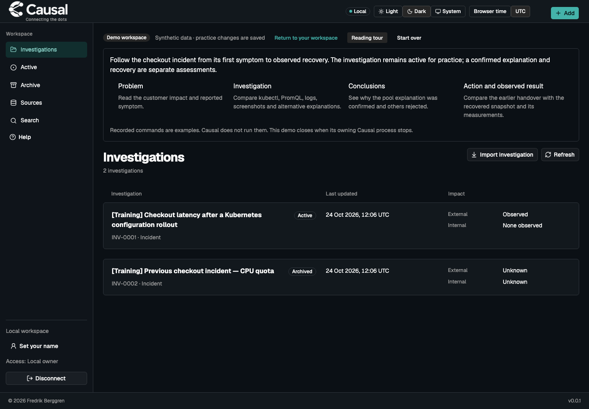
Get started
Practice in an isolated demo workspace
Try the packaged training case in a separate local workspace.
View screenshot →
Explore Causal
These 19 verified screens introduce Causal's main tasks. Choose a topic or open a preview to inspect it. For step-by-step instructions, read the full user guide.

Try the packaged training case in a separate local workspace.
View screenshot →

Create an investigation with a title; add details when they help.
View screenshot →

Save notes, images and a symptom together before filling optional details.
View screenshot →
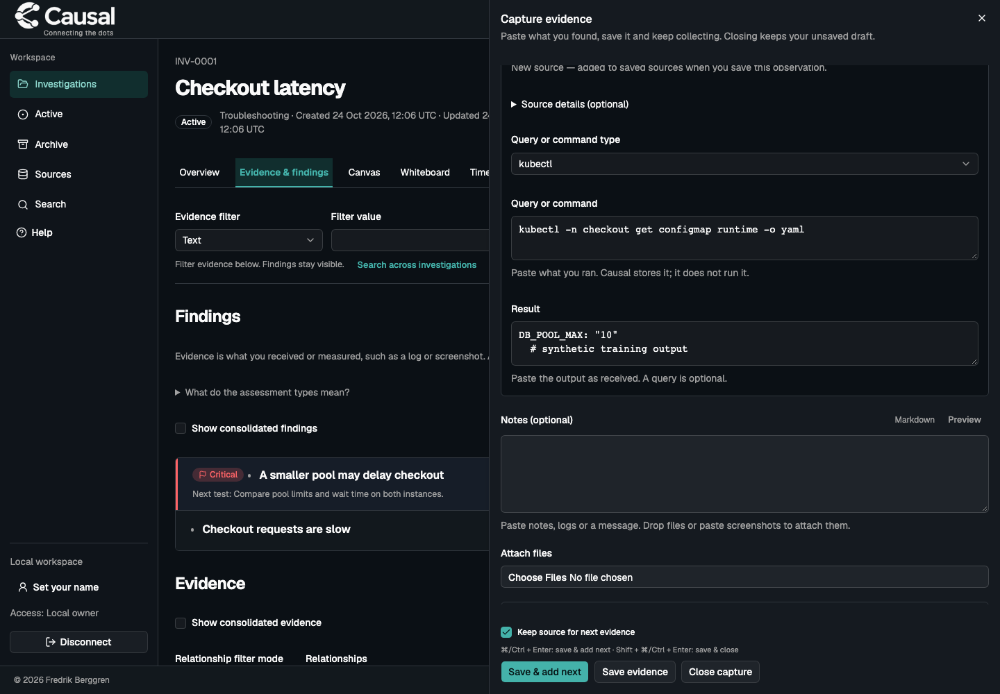
Record a command and its reported result with reusable source context. Causal does not run it.
View screenshot →
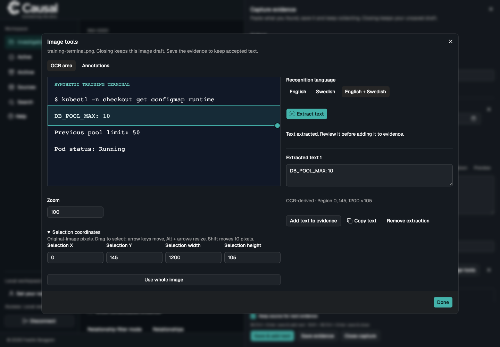
Select a screenshot region, review local OCR text and choose what to save.
View screenshot →

Inspect the full observation, reported query and result, source and limitations.
View screenshot →
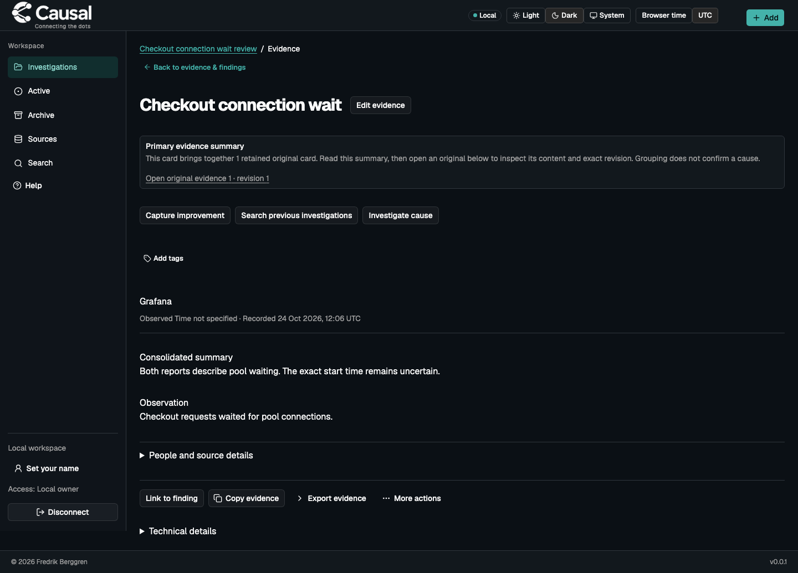
Read an authored summary and its retained original evidence separately.
View screenshot →

Form a possible cause, cite relevant evidence and name the next check.
View screenshot →

Confirm an assessment with a mechanism, scope, supporting evidence and remaining uncertainty.
View screenshot →
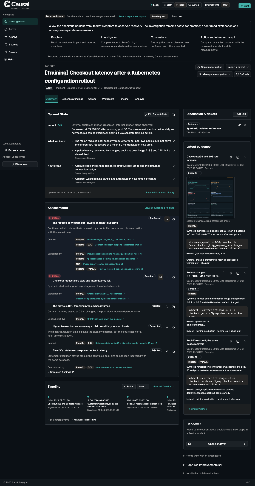
See current understanding, assessments and recent evidence together.
View screenshot →
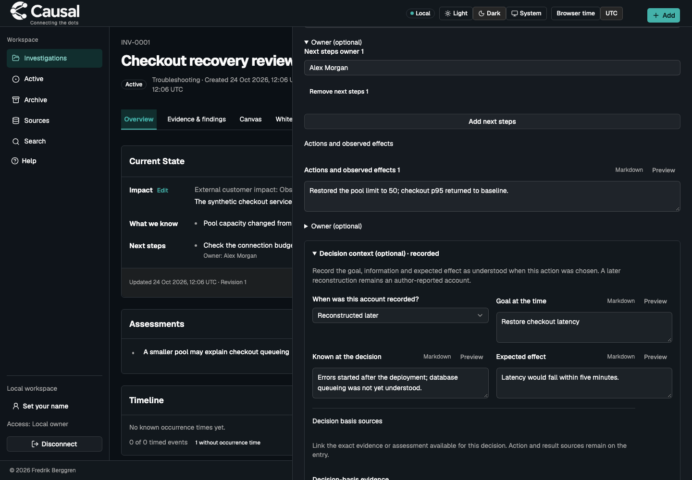
Record why an action was chosen and identify accounts reconstructed later.
View screenshot →

Follow observations by occurrence time while keeping unknown times visible.
View screenshot →
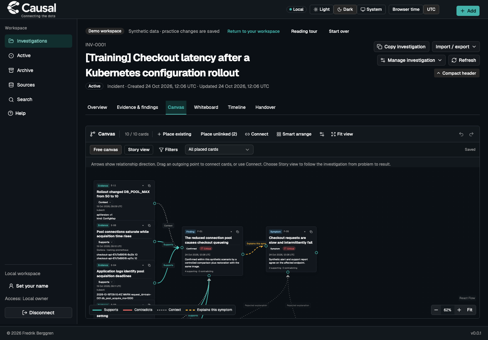
Arrange evidence and findings as a graph without changing their records.
View screenshot →
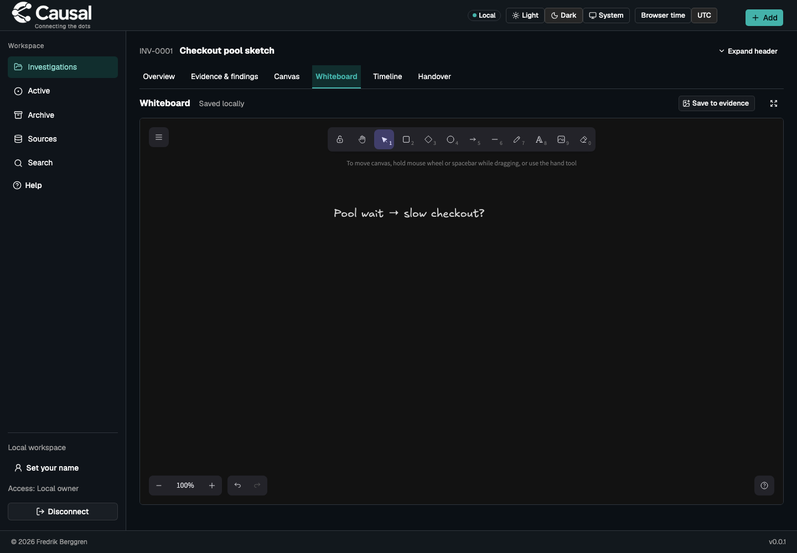
Sketch locally, then explicitly save a fixed image as evidence when useful.
View screenshot →
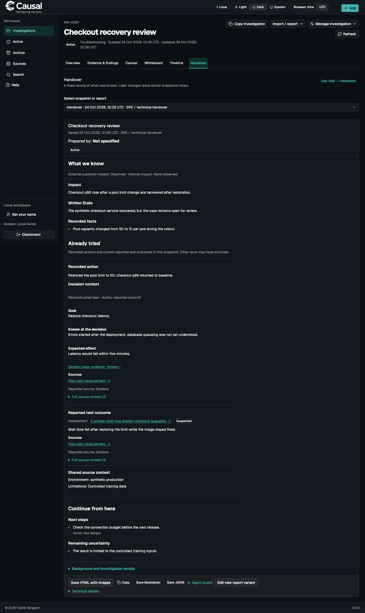
Give the next reader known facts, work already tried, sources and next steps.
View screenshot →
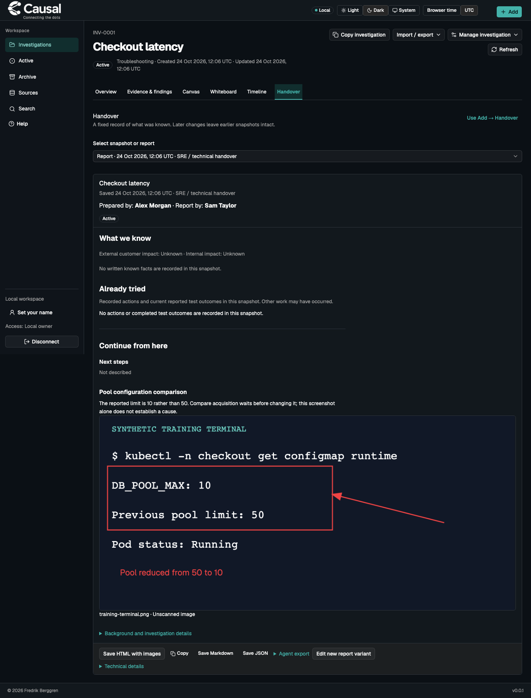
Create a portable report with a fixed annotated image.
View screenshot →

Search exact evidence across investigations and inspect earlier context.
View screenshot →

Record observed recovery even when the root cause remains unknown.
View screenshot →
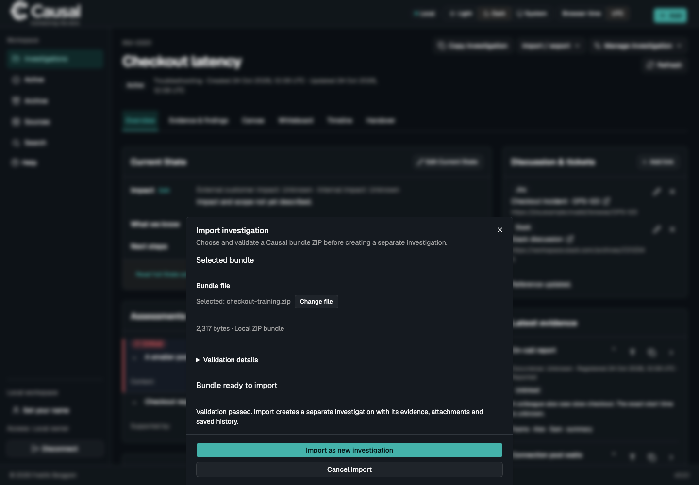
Preview a bundle before importing it as a separate investigation.
View screenshot →
No matching features. Try a different search or category.